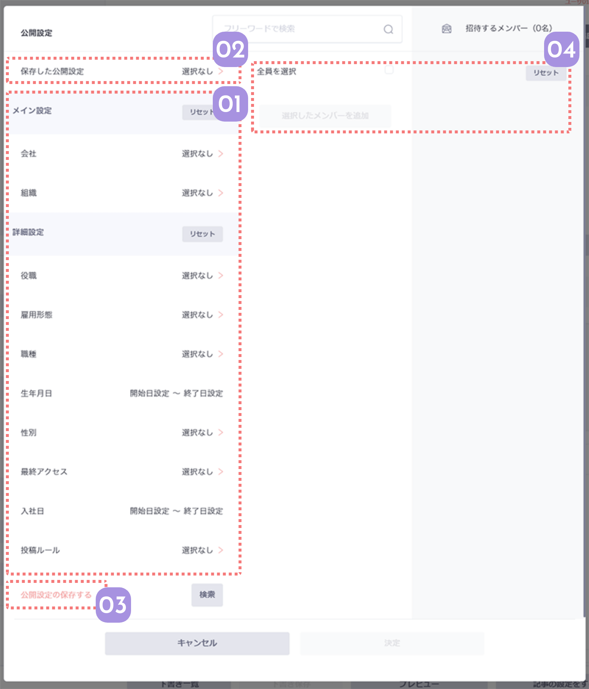

社内連絡やイベントの招待などに利用できる公開対象の選択画面。
組織ごとだけではなく、入社年や性別など細かいセクションで検索して送ることができます。

01
様々な条件でメンバーを検索できます
メイン設定は会社と組織で絞り込みができます。
詳細設定はさらに細かい条件でメンバーを検索可能。
細かく条件を設定したら、下の検索ボタンで該当するメンバーを検索しよう。
「リセット」を押すと、条件を選択していない状態に戻ります。
02
保存した検索条件を呼び出せます
よく使う公開対象の条件は保存することができます。
保存した条件は、ここから選んで呼び出すことができます。
03
検索条件を保存することができます
検索条件を設定したら、ここで保存することができます。
次にまた同じ対象に送りたいときに利用しましょう。
04
検索結果からメンバーを追加します
条件の設定が終わると、真ん中の行に検索されたメンバーが表示されるので、ここで対象となるメンバーをチェックします。
「選択したメンバーを追加」を押すと右側の「招待するメンバー」リストに選択したメンバーが並ぶので、ここで最終チェックします。
